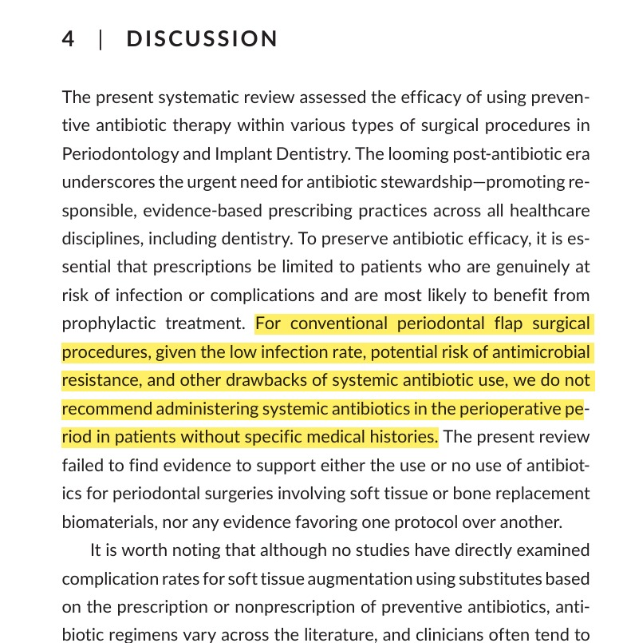

Evidencia científica – Medicación postoperatoria
Artículo
The role of antibiotics in preventing surgical
complications in periodontology and implant dentistry
Periodontology 2000
2025
Fragmento utilizado como sustento clínico

"El fragmento resaltado muestra que la evidencia científica actual no recomienda el uso rutinario de antibióticos en cirugías periodontales convencionales en pacientes sanos, debido a la baja incidencia de infecciones postoperatorias y al riesgo de favorecer la resistencia bacteriana."